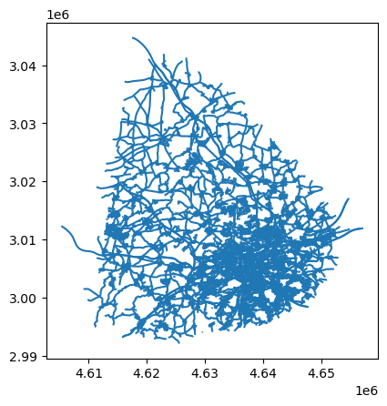

import geopandas as gpd
import pandas as pdDownload country MS buildings
country = 'Czechia'def read_ms_buildings(url):
from shapely.geometry import shape
df = pd.read_json(url, lines=True)
df['geometry'] = df['geometry'].apply(shape)
gdf = gpd.GeoDataFrame(df, crs=4326).to_crs(epsg=3035)
return gdfdef read_microsoft_country_data(country):
dataset_links = pd.read_csv("https://minedbuildings.blob.core.windows.net/global-buildings/dataset-links.csv")
location_links = dataset_links[dataset_links.Location == location]
from joblib import Parallel, delayed
n_jobs = -1
all_data = Parallel(n_jobs=n_jobs)(
delayed(read_ms_buildings)(row.Url) for _, row in location_links.iterrows()
)
return pd.concat(all_data, ignore_index=True)%%time
gdf = read_microsoft_country_data(country)CPU times: user 2.58 s, sys: 1.33 s, total: 3.91 s
Wall time: 3min 5sgdf = gdf.sort_values('geometry').reset_index(drop=True)%%time
gdf.to_parquet(f'../data/ms_{country.lower()}.parquet', geometry_encoding='geoarrow', write_covering_bbox=True, schema_version='1.1.0')CPU times: user 5.83 s, sys: 724 ms, total: 6.55 s
Wall time: 6.53 sRead region data
region_name = 69300regions_datadir = "/data/uscuni-ulce/"
region_hulls = gpd.read_parquet(
regions_datadir + "regions/" + "regions_hull.parquet"
)region_id, region_hull = region_hulls.loc[region_name].name, region_hulls.loc[region_name].convex_hullprague_gdf = gpd.read_parquet('../data/ms_czechia.parquet', bbox=region_hull.bounds)
prague_gdf = prague_gdf.iloc[prague_gdf.sindex.query(region_hull, predicate='intersects')]
prague_gdf.shape# import lonboard# layer = lonboard.PolygonLayer.from_geopandas(prague_gdf)# m = lonboard.Map(layer)# mDefine regions on MS data
import dask.dataframe as dd
import geopandas as gpd
import numpy as np
import pandas as pd
from sklearn.cluster import DBSCANgdf = gpd.read_parquet('../data/ms_czechia.parquet')cents = gdf.centroid
gdf['x'], gdf['y'] = cents.x, cents.y
gdf['id'] = gdf.index.values
data = gdf[["x", "y", 'id']]data[["x_100", "y_100"]] = np.around(data[["x", "y"]], decimals=-2)
grid = data[["id", "x_100", "y_100"]].groupby(["x_100", "y_100"]).count().reset_index()/tmp/ipykernel_2572923/4289293720.py:1: SettingWithCopyWarning:
A value is trying to be set on a copy of a slice from a DataFrame.
Try using .loc[row_indexer,col_indexer] = value instead
See the caveats in the documentation: https://pandas.pydata.org/pandas-docs/stable/user_guide/indexing.html#returning-a-view-versus-a-copy
data[["x_100", "y_100"]] = np.around(data[["x", "y"]], decimals=-2)
/tmp/ipykernel_2572923/4289293720.py:1: SettingWithCopyWarning:
A value is trying to be set on a copy of a slice from a DataFrame.
Try using .loc[row_indexer,col_indexer] = value instead
See the caveats in the documentation: https://pandas.pydata.org/pandas-docs/stable/user_guide/indexing.html#returning-a-view-versus-a-copy
data[["x_100", "y_100"]] = np.around(data[["x", "y"]], decimals=-2)dbscan = DBSCAN(400, n_jobs=-1).fit(grid[["x_100", "y_100"]], sample_weight=grid["id"])
grid["labels"] = dbscan.labels_data = pd.merge(data, grid, "left", on=["x_100", "y_100"])counts = data.labels.value_counts()
data["core"] = data.labels.isin(counts[counts > 10000].index.drop(-1))cores = data[data.core]grid["core"] = grid.labels.isin(counts[counts > 10000].index.drop(-1))
grid_cores = grid[grid.core]
grid_cores = gpd.GeoDataFrame(
grid_cores["labels"],
geometry=gpd.points_from_xy(grid_cores["x_100"], grid_cores["y_100"]),
crs=3035,
)
grid_cores_dissolved = grid_cores.dissolve("labels")grid_non_cores = grid[~grid.core]
grid_non_cores = gpd.GeoDataFrame(
grid_non_cores["labels"],
geometry=gpd.points_from_xy(grid_non_cores["x_100"], grid_non_cores["y_100"]),
crs=3035,
)grid_non_cores_clustered = grid_non_cores[grid_non_cores.labels != -1]
grid_non_cores_outliers = grid_non_cores[grid_non_cores.labels == -1]grid_non_cores_clustered_dissolved = grid_non_cores_clustered.dissolve("labels")%%time
nearest = grid_cores.sindex.nearest(
grid_non_cores_clustered_dissolved.geometry, return_all=False
)CPU times: user 1.5 s, sys: 0 ns, total: 1.5 s
Wall time: 1.5 sgrid_non_cores_clustered_dissolved["nearest_core"] = grid_cores.labels.values[
nearest[1]
]%%time
nearest_outliers = grid_cores.sindex.nearest(
grid_non_cores_outliers.geometry, return_all=False
)CPU times: user 130 ms, sys: 0 ns, total: 130 ms
Wall time: 130 msgrid_non_cores_outliers["nearest_core"] = grid_cores.labels.values[nearest_outliers[1]]/home/krasen/miniconda3/envs/urban_taxonomy/lib/python3.12/site-packages/geopandas/geodataframe.py:1819: SettingWithCopyWarning:
A value is trying to be set on a copy of a slice from a DataFrame.
Try using .loc[row_indexer,col_indexer] = value instead
See the caveats in the documentation: https://pandas.pydata.org/pandas-docs/stable/user_guide/indexing.html#returning-a-view-versus-a-copy
super().__setitem__(key, value)grid_non_cores = pd.concat(
[
grid_non_cores_clustered_dissolved.reset_index().explode(ignore_index=True),
grid_non_cores_outliers,
],
ignore_index=True,
)grid_non_cores["x_100"] = grid_non_cores.geometry.x
grid_non_cores["y_100"] = grid_non_cores.geometry.ydata = pd.merge(
data,
grid_non_cores[["x_100", "y_100", "nearest_core"]],
"left",
on=["x_100", "y_100"],
)data["region"] = data.labels
data.loc[~data.core, "region"] = data.loc[~data.core, "nearest_core"]data = data.rename(
columns={
"id_x": "id",
"id_y": "weight",
"labels": "dbscan_cluster",
}
)data| x | y | id | x_100 | y_100 | weight | dbscan_cluster | core | nearest_core | region | |
|---|---|---|---|---|---|---|---|---|---|---|
| 0 | 4.555524e+06 | 2.895213e+06 | 0 | 4555500.0 | 2895200.0 | 2 | 1465 | False | 1395.0 | 1395 |
| 1 | 4.555513e+06 | 2.895226e+06 | 1 | 4555500.0 | 2895200.0 | 2 | 1465 | False | 1395.0 | 1395 |
| 2 | 4.555531e+06 | 2.895390e+06 | 2 | 4555500.0 | 2895400.0 | 3 | 1465 | False | 1395.0 | 1395 |
| 3 | 4.556668e+06 | 2.895443e+06 | 3 | 4556700.0 | 2895400.0 | 2 | 1553 | False | 1395.0 | 1395 |
| 4 | 4.556712e+06 | 2.895217e+06 | 4 | 4556700.0 | 2895200.0 | 1 | 1553 | False | 1395.0 | 1395 |
| ... | ... | ... | ... | ... | ... | ... | ... | ... | ... | ... |
| 3397211 | 4.833569e+06 | 2.863265e+06 | 3397211 | 4833600.0 | 2863300.0 | 1 | -1 | False | 9750.0 | 9750 |
| 3397212 | 4.832729e+06 | 2.862271e+06 | 3397212 | 4832700.0 | 2862300.0 | 1 | -1 | False | 9750.0 | 9750 |
| 3397213 | 4.833350e+06 | 2.861897e+06 | 3397213 | 4833400.0 | 2861900.0 | 1 | -1 | False | 9750.0 | 9750 |
| 3397214 | 4.833168e+06 | 2.861214e+06 | 3397214 | 4833200.0 | 2861200.0 | 1 | -1 | False | 9750.0 | 9750 |
| 3397215 | 4.833230e+06 | 2.860820e+06 | 3397215 | 4833200.0 | 2860800.0 | 1 | -1 | False | 9750.0 | 9750 |
3397216 rows × 10 columns
pd.concat(
[
grid_cores,
grid_non_cores[["nearest_core", "geometry"]].rename(
columns={"nearest_core": "labels"}
),
]
).dissolve("labels").convex_hull.to_frame("convex_hull").to_parquet(
"../data/ms_czechia_regions_hull.parquet"
) Processing
import geopandas as gpd
import pandas as pdregion_name = 4182buildings_dir = '../data/ms_buildings/'
streets_dir = '../data/ms_buildings/'
enclosures_dir = '../data/ms_buildings/'
tessellations_dir = '../data/ms_buildings/'
graph_dir = '../data/ms_buildings/'
chars_dir = '../data/ms_buildings/chars/'region_hulls = gpd.read_parquet("../data/ms_buildings/ms_czechia_regions_hull.parquet")region_id, region_hull = region_hulls.loc[region_name].name, region_hulls.loc[region_name].convex_hullprocess buildings
from core.generate_buildings import read_region_buildings, process_region_buildingsbuildings = gpd.read_parquet('../data/ms_buildings/ms_czechia.parquet', bbox=region_hull.bounds)
buildings = buildings.iloc[buildings.sindex.query(region_hull, predicate='intersects')]
buildings.shape(234287, 3)buildings = process_region_buildings(buildings, True, simplification_tolerance=.1, merge_limit=25)Percent polygons: 1.0
Final polygons: 231507 , dropped: 0.011865788541404299buildings.to_parquet(buildings_dir + f"buildings_{region_id}.parquet")process streets
from core.generate_streets import process_region_streets## overture is indexed based on 4326
overture_hull = region_hulls.loc[[region_name], ].to_crs(epsg=4326).convex_hull.iloc[0]%%time
## processs streets
streets = process_region_streets(overture_hull, region_id)CPU times: user 3.06 s, sys: 1.31 s, total: 4.37 s
Wall time: 2min 26s/home/krasen/urban_taxonomy/core/generate_streets.py:62: FutureWarning: Downcasting object dtype arrays on .fillna, .ffill, .bfill is deprecated and will change in a future version. Call result.infer_objects(copy=False) instead. To opt-in to the future behavior, set `pd.set_option('future.no_silent_downcasting', True)`
streets = streets[~streets.road.str.contains('is_tunnel').fillna(False)]streets.plot()
## save streets
streets.to_parquet(streets_dir + f'streets_{region_id}.parquet')process elements
from core.generate_elements import process_region_elementsenclosures, tesselations = process_region_elements(buildings_dir, streets_dir, region_id)---- Processing region: 4182 2024-07-20 11:28:45.153144enclosures.to_parquet(enclosures_dir + f"enclosure_{region_id}.parquet")
print("Processed enclosures")
## save files
tesselations.to_parquet(
tessellations_dir + f"tessellation_{region_id}.parquet"
)
print("processed tesselations")Processed enclosures
processed tesselations# import lonboard
# layer = lonboard.PolygonLayer.from_geopandas(tesselations, opacity=.15)
# m = lonboard.Map(layer)process graphs
process_region_graphs(
region_id,
graph_dir,
buildings_dir,
streets_dir,
enclosures_dir,
tessellations_dir,
)Built tess graph knn=1
Built buildings graph knn=1
Built streets graph knn=1
Built enclosure graph knn=1/home/krasen/miniconda3/envs/urban_taxonomy/lib/python3.12/site-packages/libpysal/weights/weights.py:1685: UserWarning: The weights matrix is not fully connected:
There are 266 disconnected components.
w = W(neighbors, weights, ids, silence_warnings=silence_warnings)Built nodes graph knn=1process chars
from core.generate_chars import process_single_region_charsprocess_single_region_chars(
region_id,
graph_dir,
buildings_dir,
streets_dir,
enclosures_dir,
tessellations_dir,
chars_dir
)2024-07-20 12:24:44.261120 ----Processing ------ 4182
Processing streets/home/krasen/momepy/momepy/functional/_diversity.py:73: RuntimeWarning: invalid value encountered in cast
).values.astype(bool)Processing enclosures
Processing buildings
Processing tessellationmerge data
tessellation = gpd.read_parquet(chars_dir + f"tessellations_chars_{region_id}.parquet")
buildings = gpd.read_parquet(chars_dir + f"buildings_chars_{region_id}.parquet")
enclosures = gpd.read_parquet(chars_dir + f"enclosures_chars_{region_id}.parquet")
streets = gpd.read_parquet(chars_dir + f"streets_chars_{region_id}.parquet")
nodes = gpd.read_parquet(chars_dir + f"nodes_chars_{region_id}.parquet")
merged = pd.merge(
tessellation.drop(columns=["geometry"]),
buildings.drop(columns=["nodeID", "geometry", 'nID']),
right_index=True,
left_index=True,
how="left",
)
merged = merged.merge(
enclosures.drop(columns="geometry"),
right_on="eID",
left_on="enclosure_index",
how="left",
)
merged = merged.merge(streets.drop(columns="geometry"), on="nID", how="left")
merged = merged.merge(nodes.drop(columns="geometry"), on="nodeID", how="left")
merged = merged.drop(
columns=[
"nID",
"eID",
"nodeID",
"mm_len",
"cdsbool",
"node_start",
"node_end",
"x",
"y",
"enclosure_index",
# "id",
# "osm_id",
]
)
merged = merged.set_index(tessellation.index)
from core.utils import used_keys
primary = merged[list(used_keys.keys())]
primary.to_parquet(chars_dir + f'primary_chars_{region_id}.parquet')